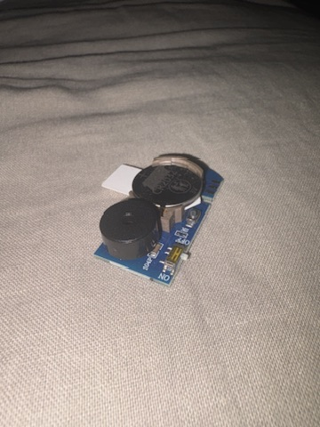

1. Breadboard prototyping
GRID corpus video was processed using MediaPipe facial landmarks and OpenCV to isolate the mouth region from each speaker.
Starter Project
A reverse-engineering project to prototype and redesign a prank noisemaker device.
I got this device on amazon to prank my friends with. It was a simple little device, but I wanted to see if I could tear it down and rebuild it myself.

I developed my version of the noisemaker device in three steps:
GRID corpus video was processed using MediaPipe facial landmarks and OpenCV to isolate the mouth region from each speaker.
Audio and text transcripts were processed with Montreal Forced Aligner to obtain phoneme-level timestamps for each utterance.
Short grayscale frame sequences were classified using lightweight 2D convolutional AI neural networks trained with TensorFlow and Keras.
Another simple content area. Keep it, delete it, or change the layout.